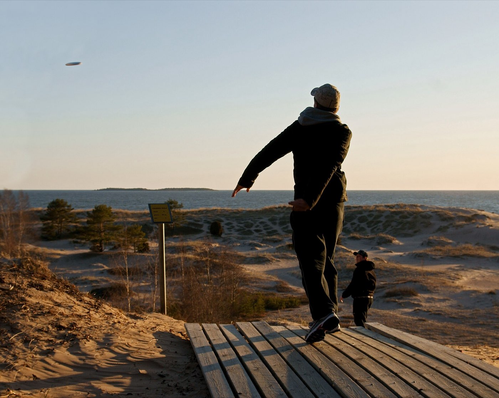

League-night incidents
- The drive found the ravine. So did you. Sidehill leaves, hidden roots, and an ankle that pops on the scramble down. The walk back crosses six holes — or doesn’t, if somebody knows how to splint and when to send for help.
- Reaching into the rough. The disc is under a bush, and something under the bush objects. Copperhead bites are rarely fatal and never optional: mark the swelling edge, pull the rings off, and get moving toward care — no cutting, no sucking, no ice.
- Hole 14, bee, wheeze. A sting at the tee pad turns into hives by the fairway and a tight chest at the basket. Somebody’s bag needs epi in it, and everybody needs to know it goes in now — not after the antihistamine.
Five lessons between rounds
Short lessons, ordered by what wooded courses actually produce:
- Anaphylaxis — the bee sting that stops being a bee sting
- Bites & Stings — the rough is habitat — reach in accordingly
- Heat Illness — July league night is an endurance event with baskets
- Musculoskeletal Injuries — ravines and root balls collect ankles
- Medical Emergencies — chest pain on a hilly course deserves more respect than "I’m out of shape"
Then pressure-test it
Interactive scenarios — one decision at a time, tempting mistakes included, debrief at the end:
- Find the Epi — whose bag is it in? the wrong answer is nobody’s
- Sharpie on the Leg — the marker, the time, and none of the folklore
- Cool First — when your doubles partner stops making sense in the heat
The certification question, honestly. “Wilderness First Aid” isn’t a regulated credential. No government body defines what a WFA card means — it means whatever the company that printed it says it means. What counts in front of a patient is whether you can do the work. This course teaches the work, free, and issues a record of completion — not a certificate, and we won’t pretend otherwise. There’s no first aid card for disc golf, and this isn’t one — it’s a record of completion, not a credential. If you run leagues or direct tournaments, pairing this with an in-person CPR and first aid class from the Red Cross or AHA is the responsible-adult move. If nobody requires you to hold a card, what you need are the skills, not the laminate.
What this is
Fifteen lessons, a 40-question knowledge check, sixteen practice scenarios, a printable field reference card, and a kit checklist. Free, no account, nothing recorded about you, source on GitHub. It teaches decision-making, not hands-on skill — practice the hands-on parts on a real, padded, complaining friend.
Same trails, different speeds: backpackers & thru-hikers · mountain bikers · trail runners